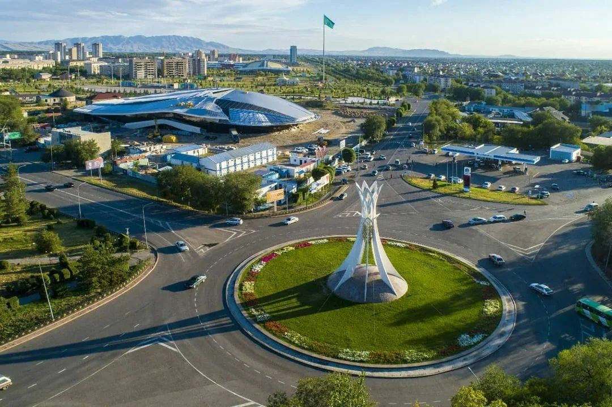

Талдықорған – Қазақстанның оңтүстік-шығыс бөлігінде орналасқан көрікті қала. Ол Жетісу облысының әкімшілік орталығы болып табылады. Қала Қаратал өзенінің бойында, Жоңғар Алатауының етегінде орналасқан. Осындай табиғи орналасуының арқасында Талдықорғанның климаты жайлы, ауасы таза, табиғаты ерекше әсем.